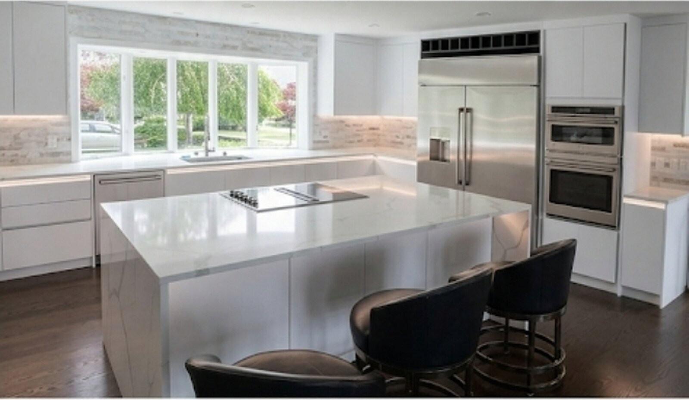
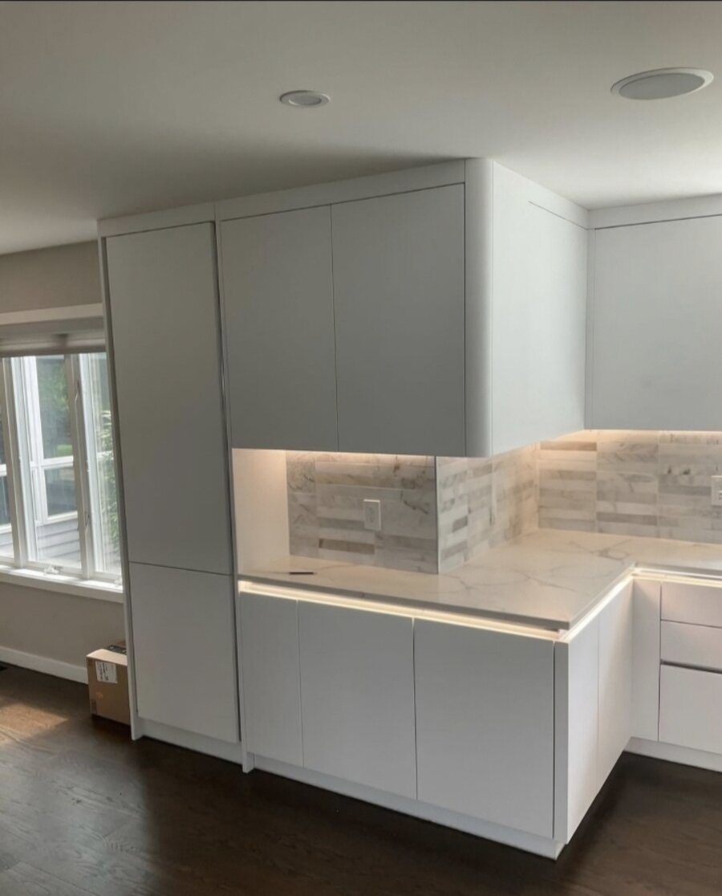
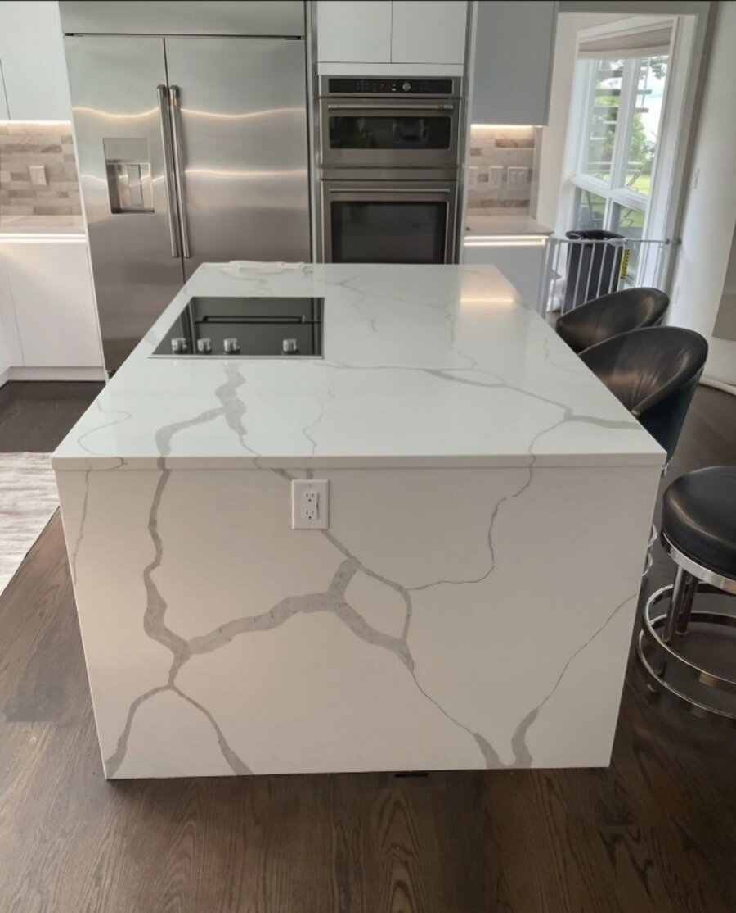
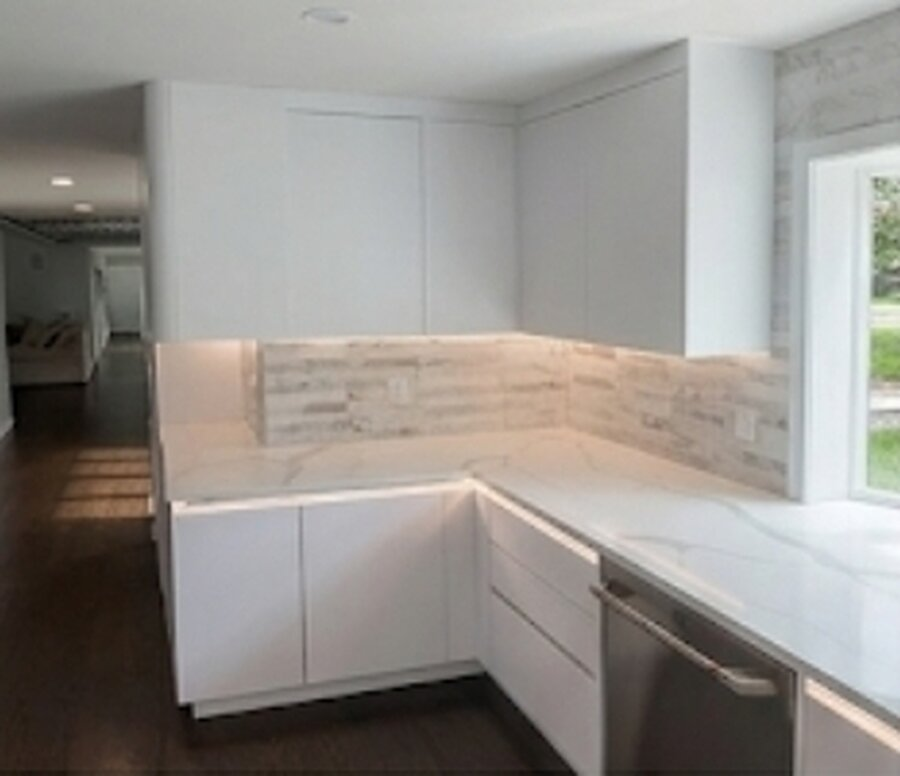

Kitchen Renovations
A structured, protective process built around your household — not against it.
Request a ConsultationA kitchen renovation touches the busiest room in your house. At Restoricon, LLC, we treat that disruption as something to be managed, not endured — every project is run with the same structure and containment discipline we bring to every job, so your home stays livable from demo day to final walkthrough.
How We Protect Your Home During a Kitchen Renovation
1. The Kitchen Is Quarantined Before Work Begins
Before a single tool comes out, we section off the work zone. Heavy-duty drop cloths cover flooring and countertops, and plastic sheeting is hung to seal the kitchen off from the rest of the house — containing dust, debris, and demolition mess to the work area instead of letting it spread through your living space.

2. Clean Paths In and Out of Your Home
Drop cloths and padded floor runners are laid from the entry point straight to the work zone, so dirt, debris, and foot traffic from our crew never travel through the rest of your house. Your home stays clean in every room outside the renovation, not just the kitchen itself.

3. Vetted Tradespeople Who Work Around Your Life
Every subcontractor on site is licensed, insured, and screened by us before they set foot in your home. They're trained to work efficiently and respectfully around a household that's still living its daily routine — coordinating schedules, minimizing noise windows, and keeping a tidy site so you can carry on with normal life while the work gets done.

4. Built Around Your Schedule, Not Ours
Renovations are stressful enough without wondering what's happening next. We work with homeowners to adjust the schedule around family routines, give structured progress updates at each stage, and stay flexible when life happens — so the process feels manageable from start to finish, not chaotic.

Recent Kitchen Work
Ready to Talk Through Your Kitchen Project?
Call (860) 337-1820, email contact@restoricon.com, or request a consultation below.
Request a Consultation